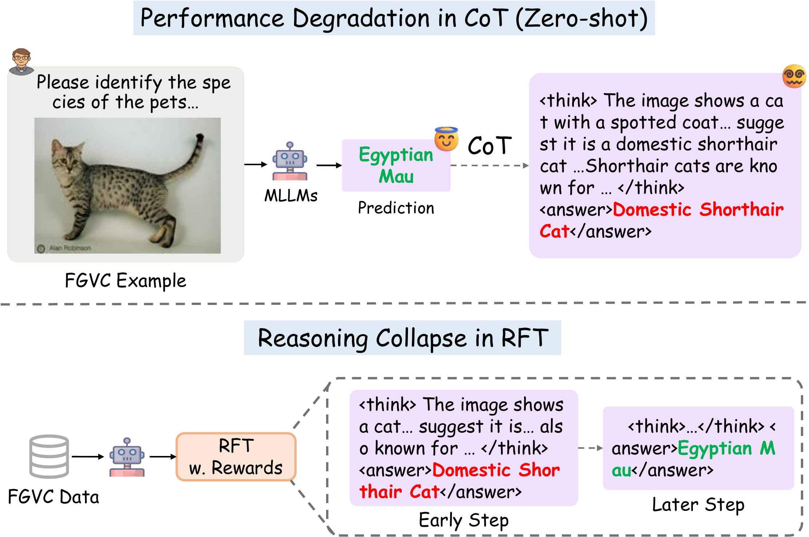
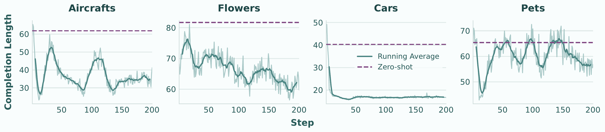
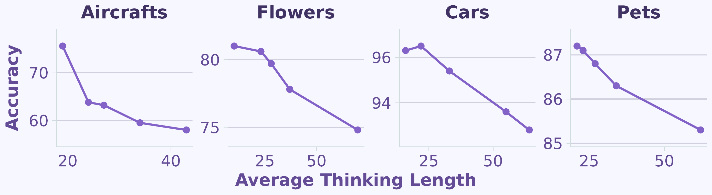
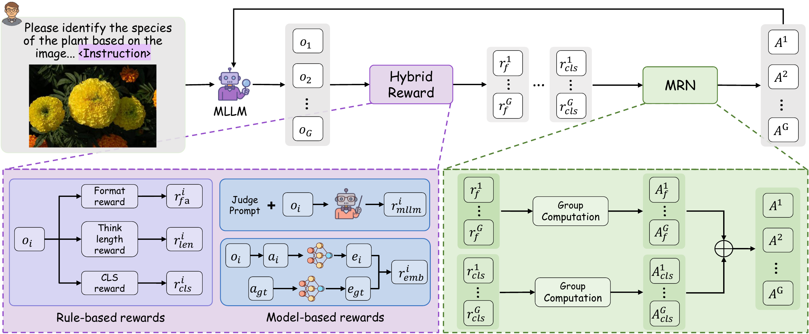
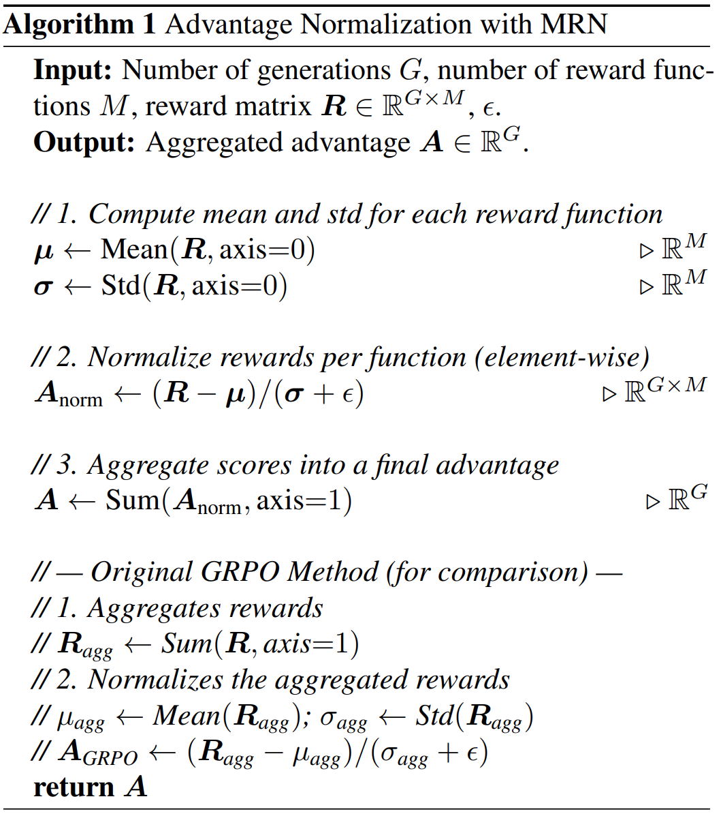
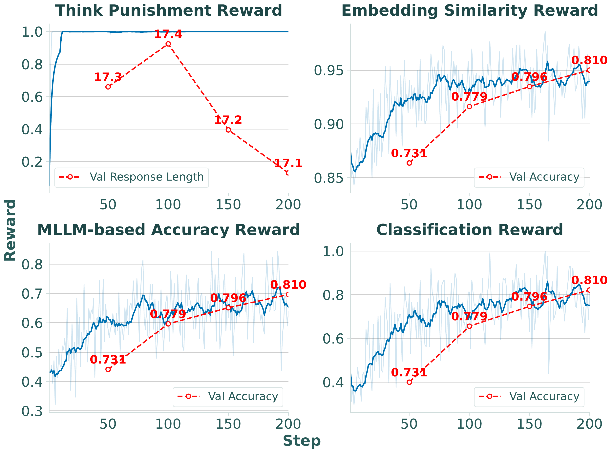
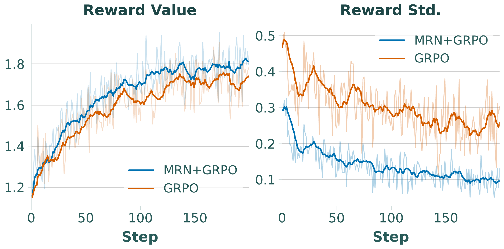
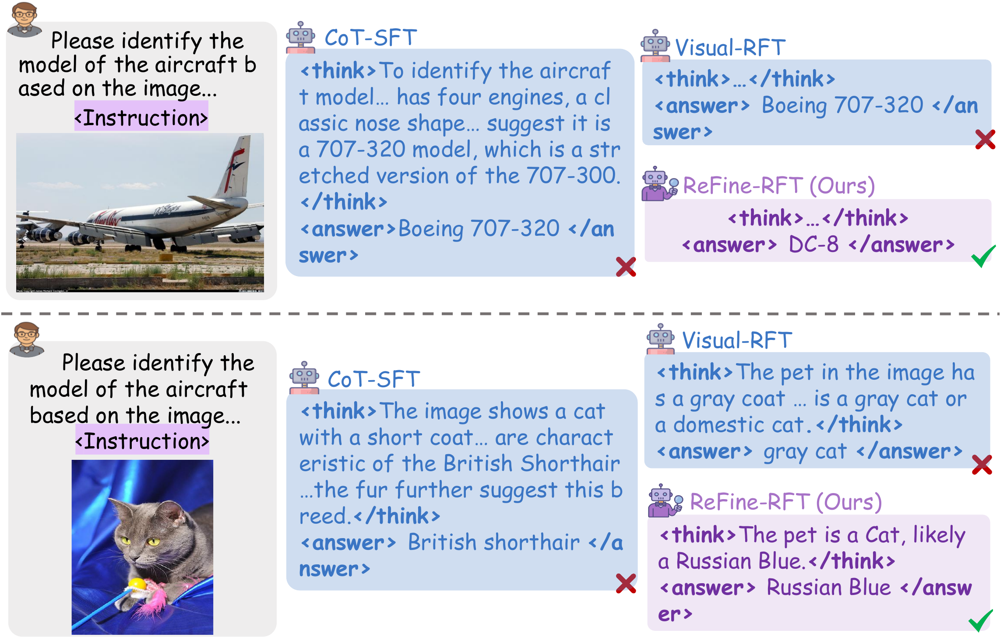

1Michigan State University 2University of North Carolina at Chapel Hill
Multi-modal large language models (MLLMs) still struggle on Fine-Grained Visual Classification (FGVC), where subtle visual discrimination is essential. Chain-of-Thought (CoT) reasoning is widely adopted to boost performance on challenging tasks, yet prior works have shown it can harm visual perception accuracy. We systematically re-examine the role of textual reasoning in FGVC across zero-shot and RFT settings, uncovering a central paradox: reasoning length is the key factor — longer CoT consistently lowers classification accuracy, a phenomenon we term the "Cost of Thinking".
Building on this, we propose ReFine-RFT, combining an ensemble reward with Multi-Reward Normalization (MRN) to constrain reasoning length while providing dense, accuracy-centric feedback. Extensive experiments achieve state-of-the-art results across FGVC benchmarks.
Verbose CoT systematically degrades MLLM performance on fine-grained perception — thinking length, not CoT quality, is the key factor.
A plug-and-play normalization module that independently normalizes heterogeneous reward signals before aggregation, stabilizing multi-objective RFT training.
Integrates MRN with an ensemble reward (format, accuracy, thinking length, MLLM-based, embedding similarity) to optimize visual accuracy while controlling reasoning length.
ReFine-RFT achieves 86.5% average accuracy (+3.6% vs Visual-RFT) on four FGVC benchmarks with only a 2B backbone in 4-shot settings.
CoT prompting consistently leads to accuracy degradation across all FGVC datasets. Non-reasoning models exhibit an average drop of 3–6% when switching from Answer-only to CoT prompts. More strikingly, during RFT, models exhibit Reasoning Collapse — they gradually suppress verbose reasoning while optimizing for accuracy.



For fine-grained visual tasks, thinking length is the key factor: excessive reasoning hurts performance, and MLLMs benefit more from concise responses than from elaborate reasoning.
Inspired by our Cost of Thinking analysis, we propose ReFine-RFT: a reinforcement fine-tuning framework that jointly constrains reasoning length and provides dense accuracy-centric feedback. It features two key components: an Ensemble Reward for richer supervision, and Multi-Reward Normalization (MRN) for stable multi-objective optimization.

Standard binary accuracy rewards offer sparse supervision and fail to capture semantic similarity (e.g., "thorn apple" vs. "Datura stramonium" denote the same species). We design an ensemble of five complementary reward signals to provide richer, more accuracy-centric feedback:
Binary reward enforcing adherence to the structured <think>...</think><answer>...</answer> output template.
Binary accuracy reward: yields 1 when the predicted class extracted from the answer tag matches ground truth, 0 otherwise.
Assigns 1 when reasoning length falls within [Lmin, Lmax] = [0, 10], explicitly constraining verbosity during training.
A teacher MLLM grades each prediction on [0, 1] based on semantic alignment with the ground-truth label, capturing subcategory-level nuances.
Cosine similarity between the predicted and ground-truth answer embeddings (via E5), providing a smooth, continuous semantic supervision signal.
When multiple reward signals are combined in standard GRPO, they are first summed and then normalized as a single scalar. This causes fast-saturating rewards (e.g., format reward) to dominate early training and dilute the influence of slower, more informative rewards (e.g., accuracy). MRN addresses this by normalizing each reward independently before aggregation, placing all rewards on a comparable scale throughout training.

For fine-grained visual perception, jointly using multi-perspective, accuracy-centric rewards and explicit reasoning length control leads to stronger visual perception capabilities.
ReFine-RFT is evaluated in a 4-shot setting on four FGVC benchmarks: Aircrafts-102, Flowers-102, Cars-196, and Oxford-Pets-37. Using Qwen2-VL-2B-Instruct as the base, ReFine-RFT with LoRA achieves 86.5% average accuracy, a +3.6% improvement over Visual-RFT.
| Methods | FT Method | FT Type | Aircrafts-102 | Flowers-102 | Cars-196 | Pets-37 | Average |
|---|---|---|---|---|---|---|---|
| Qwen2-VL-2B | Zero-shot | — | 45.9 | 54.8 | 56.8 | 66.4 | 56.0 |
| Finedelics-8B | SFT | Fully-FT | 63.8 | 89.9 | 84.7 | 92.2 | 82.7 |
| SFT-AO | SFT | Fully-FT | 67.9 | 58.5 | 40.5 | 55.5 | 55.6 |
| SFT-AO | Lora | 78.3 | 74.8 | 80.0 | 87.6 | 80.2 | |
| SFT-CoT | Lora | 73.9 | 74.4 | 52.3 | 87.5 | 72.0 | |
| Visual-RFT | RFT | Fully-FT | 74.8 | 71.4 | 95.3 | 86.1 | 81.9 |
| Visual-RFT | Lora | 75.6 | 74.1 | 95.7 | 86.0 | 82.9 | |
| No-Thinking-RFT | Fully-FT | — | 71.2 | — | 86.1 | — | |
| ReFine-RFT-AO (Ours) | Lora | 78.7 | 81.4 | 93.1 | 87.6 | 85.2 | |
| ReFine-RFT-CoT (Ours) | RFT | Lora | 79.3 (+3.7%) | 81.0 (+6.9%) | 97.1 (+1.4%) | 88.6 (+2.6%) | 86.5 (+3.6%) |



ReFine-RFT with only a 2B backbone and 4-shot training significantly surpasses Finedelics-8B trained on the full FGVC datasets, underscoring the efficiency and scalability of our approach. The gain comes not from using more data or parameters, but from better reward shaping and reasoning control.
@inproceedings{zhu2026refinerft,
title = {Can Textual Reasoning Improve the Performance of MLLMs
on Fine-grained Visual Classification?},
author = {Zhu, Jie and Su, Yiyang and Liu, Xiaoming},
booktitle = {CVPR Findings},
year = {2026},
}